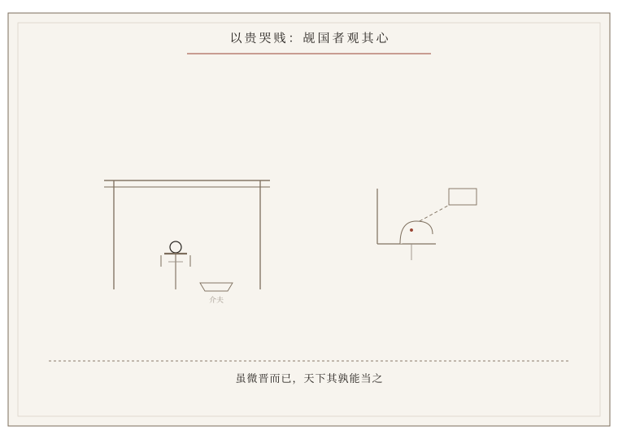

檀弓下 · 四·八十四 · 第 409 课
阳门之介夫死，司城子罕入而哭之哀。晋人之觇宋者，反报于晋侯曰：「阳门之介夫死，而子罕哭之哀，而民说，殆不可伐也。」孔子闻之曰：「善哉觇国乎！《诗》云：『凡民有丧，扶服救之。』虽微晋而已，天下其孰能当之？」
说什么事：宋国阳门有一个甲士死了，司城子罕进去哭得很哀。晋国的间谍回去报告晋侯：「阳门一个甲士死了，子罕哭得哀，而百姓喜悦，恐怕不可伐。」孔子听说，说：「这个间谍真会看国啊！《诗》说『凡民有丧，匍匐救之』。虽不是晋国，天下谁能挡得住它？」
落在哪一层：以「同死生」为界。可伐不可伐，不看兵甲，看贵者哭贱者的那一场哭。
为何编在此位：上节论一身之饰，此节论一国之心。饰在一人，心在一国。
【经】阳门之介夫死，司城子罕入而哭之哀。晋人之觇宋者，反报于晋侯曰：「阳门之介夫死，而子罕哭之哀，而民说，殆不可伐也。」孔子闻之曰：「善哉觇国乎！《诗》云：『凡民有丧，扶服救之。』虽微晋而已，天下其孰能当之？」
【注】阳门，宋国门名。介夫，甲卫士。宋以武公讳司空为司城。子罕，戴公子乐甫术之后乐喜也。／觇，窥视也。／善其知微。／救犹助也。／微犹非也。
【疏】此一节论善觇国之事。○知有「司城」者，以春秋之时，唯宋有司城，无司空；又《冬官·考工记》「匠人营国」，是司空主营城郭，故知废司空为司城。云「子罕，戴公子乐甫术之后」者，案《世本》：戴公生乐甫术，术生石甫原绎，绎生夷甫倾，倾生东乡克，克生西乡士曹，曹生子罕喜。是子罕为术之五世孙也。○「殆不可伐也」者，言介夫匹庶之贱人，而子罕是国之卿相，以贵哭贱，感动民心，皆喜悦，与上共同死生。若有人伐，民必致死，故云「殆不可伐」。殆，近也。不能正执，故云「殆不可伐」，为疑辞也。○引《诗·邶·谷风》之篇也。今此引《诗》断章云「凡民有丧」，则「阳门之介夫死」是也；在上扶服而救助之，则「子罕哭之哀」是也。○「虽微晋而已」者，微，非也。言晋之强盛，犹不能当宋，虽非晋之强，天下更有强于晋者，谁能当之？「而已」是助语句也。
阳门 宋国城门名。
介夫 甲卫士。
司城 宋官名，即司空。宋避武公讳而改。
子罕 宋之卿，名乐喜。
觇 窥视、侦察。
反报 回来报告。
民说 民悦。「说」同「悦」。
殆 近也、大概。疑而未定之辞。
扶服 即「匍匐」，伏地而行。一读如字。
微 非也。
当 抵挡。
宋国阳门的一个甲士死了，司城子罕进去哭得很哀。晋国派去窥宋的人回来报告晋侯：「阳门一个甲士死了，子罕哭得哀，百姓喜悦，恐怕不可伐。」孔子听说，说：「这个间谍真会看国啊！《诗》说『凡民有丧，匍匐救之』。虽不是晋国，天下谁能抵挡它？」
此章三段：哭、觇、评。
一段在内，一段在外，一段在后。
内者一场哭，外者一句报，后者一声叹。
第一层 以贵哭贱 介夫是「匹庶之贱人」，子罕是「国之卿相」。
此哭不合于位，而合于情。 礼有等，而哀无等。
第二层 「民说」 疏云「感动民心，皆喜悦，与上共同死生」。
民所悦者，不是子罕之德，是「他肯为我们这样的人哭」。 一国之心，系于此一念。
第三层 觇者之报 「殆不可伐也」。
此报不论兵甲、不计数寡，只报一场哭。 疏云「殆，近也，为疑辞」——连间谍也不敢把话说死。
第四层 孔子之评 「善哉觇国乎」——注云「善其知微」。
知微者，能从一场哭看出一国之合。 此即所谓「觇国」。
第五层 引《诗》 「凡民有丧，扶服救之」。
诗之本义是邻里相救，此引为断章：一国之卿，对一介之夫，亦当扶服而救。 疏云「在上扶服而救助之，则子罕哭之哀是也」。
第六层 「虽微晋而已」 微，非也。
此句层层推：晋不能当，非晋者更不能当，天下无可当者。 疏云「纵有强者，不能当宋」。
第七层 此章之要 国之力不在甲，而在「贵者肯下」。
一场哭能止一国之兵，这是《檀弓》给礼的最高估价。
与今日何干 今之评国力，多算硬数；少算「上肯不肯为下哭」。
此章给一句：人心之合，是从「他为我们哭」开始的。
| 左 | 右 |
|---|---|
| 阳门介夫死 | 匹庶之贱 |
| 子罕入哭 | 国之卿相 |
| 哭之哀 | 以贵哭贱 |
| 民说 | 同死生 |
| 觇者反报 | 只报一场哭 |
| 殆不可伐 | 疑辞 |
| 善哉觇国 | 善其知微 |
| 凡民有丧 | 断章引诗 |
| 天下孰能当 | 推至极处 |
画一幅简略的城门内外场景，视点平视。画面中部画一座城门：两根立柱、一道横梁、檐下一道门限。门内画一人长衣跪坐，双手掩面，作哭状；其旁画一个极小的甲士形，卧于地。门外右侧画一段矮墙，墙后只露出一个人的半个头与一只眼，作窥视状。自窥者头顶画一条向上的虚线，虚线尽头画一个小方框。不画文字。赭色只用在那只眼睛上。
